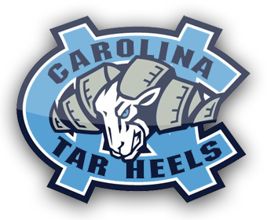
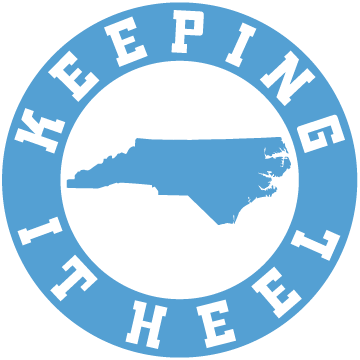

UNIVERSITY OF NORTH CAROLINA CHAPEL HILL TRIVIA GAME
 
You have 120 seconds to answer the following ten questions related to UNC-Chapel Hill. Once you are done hit the submit button to see how well you did!
1. When was the University of North Carolina at Chapel Hill founded?
2. What University of North Carolina symbol is based on the Temple of Love in the Gardens of Versailles?
3. "The Daily Tar Heel", a student run newspaper, was first called the The Tar Heel?
4. Who was the first Presiding Professor for the University of North Carolina?
5. On the North Carolina campus resides the Morehead-Patterson Bell Tower. How many bells are inside of the bell tower?
6. What street do fans converge upon to celebrate after a UNC win?
7. North Carolina is in a rivarly called the South's Oldest Rivalry. What is the other team in that rivalry?
8. "Hark the sound of Tar Heel voices Ringing clear and true. Singing Carolina's praises. Shouting N-C-U. Hail to the brightest star of all"
What verse comes next in Hark The Sound, the alma mater of the University of North Carolina at Chapel Hill?
9. What is the University of North Carolina's mascot?
10. What President of the United States attended the University of North Carolina at Chapel Hill?